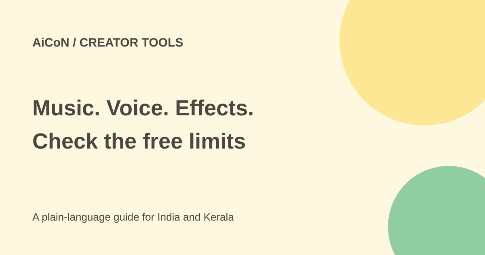

Firefly audio: AI music, speech and sound effects
Adobe Firefly can make background music, voiceovers and sound effects. Adobe offers free daily music and sound-effect generations with an account, but it does not state a daily count on the pages checked.

Three different audio tools
Generate Music makes instrumental background music. You can describe a mood or upload a video so the music fits its length. Adobe says this is not a tool for vocals or songwriting.
Generate Speech turns a script into a voiceover. The original post described more than 60 voices, but this source check did not confirm that exact current voice count. Adobe describes control over pacing and emotion and an option to use ElevenLabs. Its product page describes speech in more than 20 languages. We did not confirm Malayalam or every voice in the current account interface.
Generate Sound Effects creates sounds from a text description, a recording or reference audio. This may help a student video, shop reel or podcast. Listen to the result before adding it to the final edit.
How to start
- Open Firefly through Adobe's official page and sign in with an Adobe account.
- Choose the Audio section and the tool you need.
- For music, describe mood and style, or upload a video you have permission to use. For speech, enter a short script and choose a voice and language. For sound effects, describe or record the sound.
- Check the generation allowance shown before running a long job.
- Make a short sample first. Listen for pronunciation, clipping, awkward pauses and a mismatch with the picture.
- Check the output's model, terms and commercial-use rules. Do not assume third-party models have identical terms to Adobe models.
- Download the result and check the complete video with its final audio levels before publishing.
Free or paid?
Adobe's music and sound-effect FAQs explicitly offer free daily generations to free accounts. Neither FAQ gives a fixed daily number in the material checked. Paid plans provide higher-volume access and more model options.
We could not verify the full current plan prices from the plan page, and no fixed INR amount is quoted. Check the account's credits and Indian checkout before buying. Do not treat a free account as unlimited audio generation or assume speech has the same free allowance as music.
Rights and privacy
Adobe describes its commercially released Firefly audio as royalty-free and safe for commercial use under its guidelines. That is Adobe's claim, not a guarantee that every project has cleared rights. You still need permission for uploaded videos, recordings, faces, brands and voices. Do not imitate someone's voice without permission.
Use non-sensitive test material first. A tool that creates a soundtrack does not create permission to upload a private customer video.
What changed since the original post?
The free verdict is more specific: daily music and sound-effect trials are confirmed, but the daily count is not. We narrowed music to instrumental background tracks and avoided claiming an unverified Malayalam voice. No audio was generated in this review.
Frequently asked questions
Can I make a song with vocals?
The checked Generate Music page says it is for instrumental background music, not vocals or songwriting.
Is it unlimited for free?
No such claim is supported. Check the current daily allowance and credits.
Can I use it in a paid client video?
Check the model and Adobe's current guidelines, and clear the rights to your uploaded content and any voice.
Sources: Adobe audio announcement · Music feature and FAQ · Sound effects feature and FAQ · Firefly overview. Checked 7 October 2026.